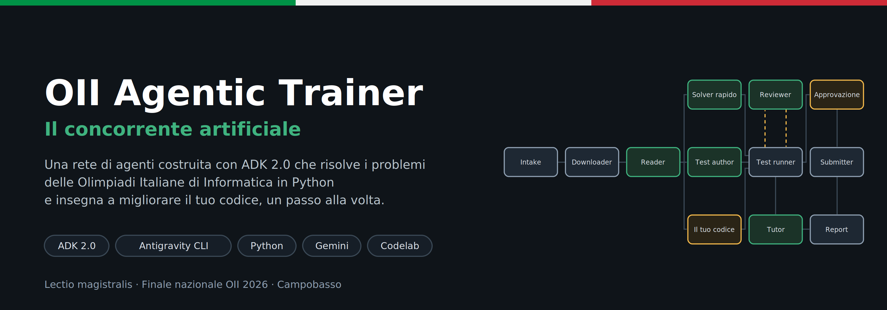
In questo codelab costruisci, un prompt alla volta, una rete di agenti che affronta i problemi delle Olimpiadi Italiane di Informatica (OII) con il metodo di un concorrente: legge il testo, scrive una prima soluzione corretta, la mette alla prova contro una brute force e la migliora finché i subtask non entrano nei limiti di tempo.
La stessa rete ha una seconda modalità, pensata per chi si allena: carichi il tuo codice e ottieni una review, una guida passo passo per renderlo più veloce e una vista visiva di ogni correzione.
Non scriverai il codice a mano. Lo scriverà Antigravity CLI (agy) a partire da prompt precisi, guidato da un file di contesto. Il tuo lavoro è quello di un progettista: decidere il grafo, verificare ogni passo, capire cosa sta succedendo.
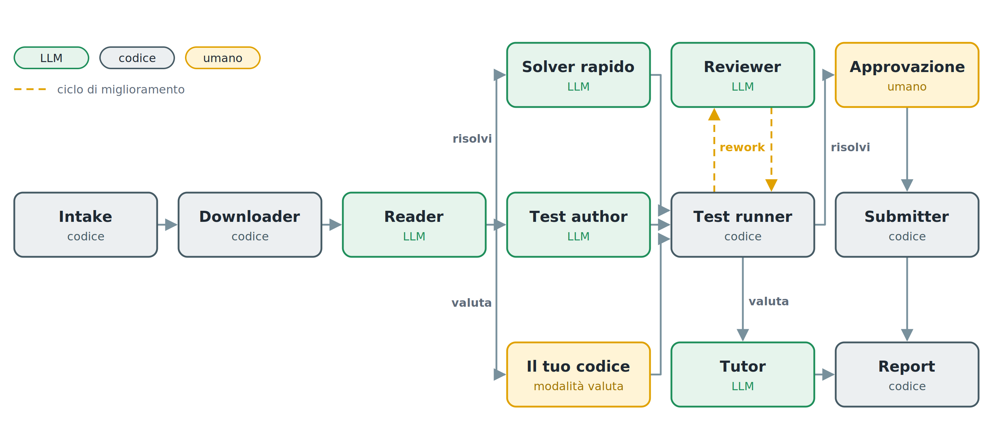
In verde gli agenti LLM, in grigio i nodi di codice, in giallo i punti in cui interviene una persona. Il tratteggio ambra è il ciclo di miglioramento tra Test runner e Reviewer.
La stessa rete lavora in due modalità: risolvi, che affronta un problema da zero, e valuta, che parte dal tuo codice e ti insegna a migliorarlo.
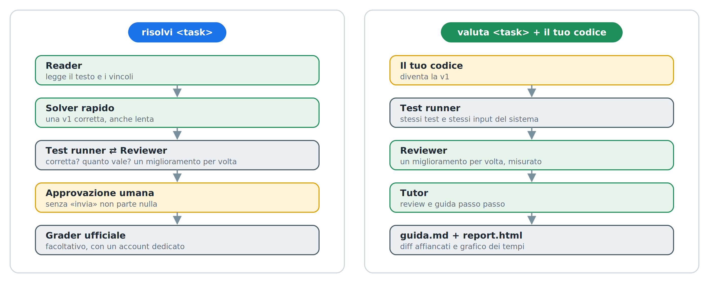
google-adk 2.9 o superiore già installato.agy) installato e collegato al tuo account.Nel repository del codelab trovi:
starter/, con AGENTS.md, CONTINUA.md e un modello del file .env, per partire in un minuto;esempi/, con due soluzioni di partenza per provare la modalità valuta.Se hai fatto le Olimpiadi questi concetti li conosci già: qui li fissiamo, perché ogni nodo del grafo ne usa almeno uno.
Un problema OII è diviso in subtask: gli stessi problemi con vincoli sempre più grandi, ognuno con i suoi punti. Dai vincoli si capisce quale complessità serve. Una regola pratica:
Vincolo su N | C++ (circa 10⁸ operazioni/s) | Python (circa 10⁷ operazioni/s) |
N ≤ 20 | O(2ᴺ · N) | O(2ᴺ) |
N ≤ 500 | O(N³) | O(N²) |
N ≤ 5.000 | O(N²) | O(N log N) |
N ≤ 10⁵ | O(N log N) | O(N log N) |
N ≤ 10⁶ | O(N log N) | O(N) |
È una stima, non una legge, ma spiega perché in Python una soluzione con l'idea giusta può comunque perdere i subtask più grandi.
La brute force è la soluzione più ovvia: prova tutte le possibilità e tiene la migliore. È lentissima, ma è quasi impossibile sbagliarla, perché non contiene nessuna idea furba. Per questo fa da riferimento: sugli input piccoli conosce sempre la risposta giusta.
# brute force: prova ogni sottoarray non vuoto, O(N²). Ovvia, quindi affidabile.
best = max(sum(a[i:j+1]) for i in range(n) for j in range(i, n))
# soluzione veloce: O(N), ma contiene un'idea, e quindi può contenere un errore
best = cur = float('-inf')
for x in a:
cur = max(x, cur + x)
best = max(best, cur)
Lo stress test mette una contro l'altra la soluzione e la brute force su tanti input piccoli e casuali. Se danno lo stesso output si passa al successivo; se no, la soluzione sbaglia, e quell'input è il controesempio.
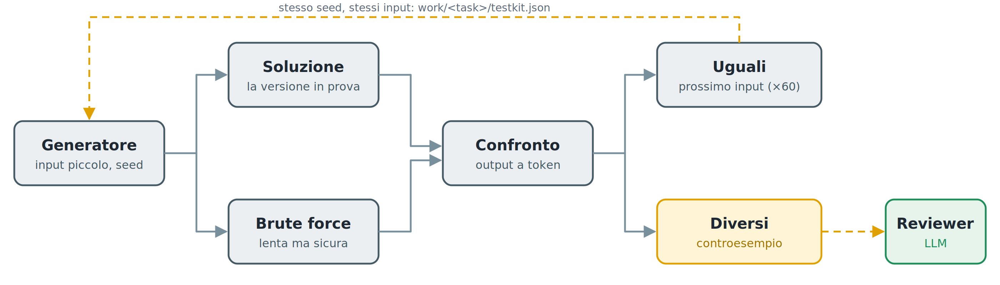
Gli input sono piccoli per due motivi: la brute force è lenta, e i bug veri stanno quasi sempre nei casi limite, che saltano fuori anche con pochi numeri.
Corretta non basta: quanto vale? Per ogni subtask si genera l'input più grande e si cronometra la soluzione contro il limite di tempo. Il punteggio stimato è la somma dei punti dei subtask che entrano nel limite.
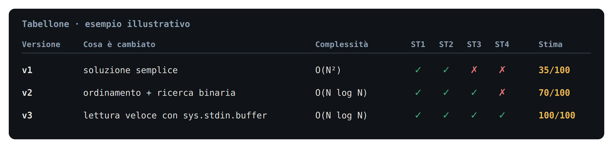
In ADK 2.0 un sistema multi-agente è un grafo. Ogni nodo è un agente LLM oppure una semplice funzione Python; gli archi dicono chi viene dopo chi; le route sono archi condizionali; un ciclo è un arco che torna indietro. Il principio del codelab: gli LLM propongono, il codice giudica.
Scarica il repository del codelab e crea accanto la cartella del progetto, con i file dello starter kit già al loro posto:
git clone https://github.com/nicolaguglielmi/OII-Agentic-Trainer-Codelab.git mkdir oii-solver cp OII-Agentic-Trainer-Codelab/starter/AGENTS.md OII-Agentic-Trainer-Codelab/starter/CONTINUA.md oii-solver/ cp OII-Agentic-Trainer-Codelab/starter/env.esempio oii-solver/.env cd oii-solver
Senza git va bene lo stesso: dalla pagina del repository scegli Code → Download ZIP e copia a mano gli stessi file.
Apri .env e inserisci la tua chiave. adk web lo legge da solo all'avvio. Il contenuto è questo:
GOOGLE_GENAI_USE_VERTEXAI=FALSE GOOGLE_API_KEY=la-tua-chiave FAST_MODEL=gemini-3.5-flash STRONG_MODEL=gemini-3.5-flash # 1 = l'invio al sito è simulato; il download resta sempre reale OLINFO_DRY_RUN=1
Se hai accesso a un modello più forte, mettilo in STRONG_MODEL: lo useranno il Reviewer e il Tutor.
Apri la pagina dei problemi di training.olinfo.it (per anno, oppure Nazionali e OIS) e scegli un task, con un nome come oii_*, preoii_* o ois_*. Il nome è l'ultima parte dell'indirizzo della pagina del task. Nella pagina pubblica controlla due cose:
Evita i task che richiedono un grader C/C++ senza un grader.py, e le Territoriali (terry/), che usano un altro sistema. Un esempio adatto: ois_rockpaperscissors. Scrivi sempre il nome completo, prefisso compreso: rockpaperscissors da solo non esiste.
Annota il nome: nel resto del codelab lo chiameremo ⟨task⟩.
Il sito può cambiare o non rispondere proprio quando serve. Scarica a mano il PDF del testo dalla pagina del task e prepara questa cartella:
fallback/<task>/testo.pdf fallback/<task>/meta.json
In meta.json copia dalla pagina del task titolo, limiti e tipo di input/output:
{"titolo": "...", "time_limit": 2, "memory_limit_mb": 256, "io": "stdin/stdout"}
Il downloader usa il fallback solo se il sito non risponde o se il PDF scaricato non è valido, e in chat dice da dove arrivano i dati. Il testo appartiene agli organizzatori delle Olimpiadi: tienilo nella tua copia locale e non pubblicarlo.
agy dalla cartella del progetto./model scegli il modello più forte disponibile per il tuo account.I modelli conoscono soprattutto la versione 1.x di ADK, basata su SequentialAgent, ParallelAgent e LoopAgent. ADK 2.0 introduce un motore a grafo con un'API diversa. Senza istruzioni, un coding agent tende a scrivere codice vecchio.
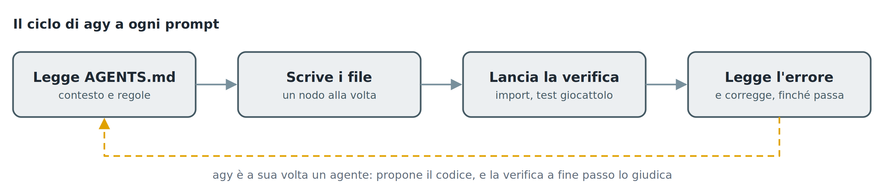
Il file AGENTS.md nella radice del progetto risolve il problema: Antigravity lo legge all'avvio di ogni sessione. Contiene il grafo da costruire, le API di ADK 2.x verificate su una versione reale, l'API del sito delle Olimpiadi e le regole del gioco.
Se hai copiato lo starter kit, AGENTS.md è già nella cartella: leggilo con calma, è la mappa di tutto il codelab. Altrimenti crealo con questo contenuto:
# Progetto: oii-solver (ADK 2.x, Python)
Rete di agenti che risolve problemi OII di training.olinfo.it in Python e insegna a
migliorare il codice. Gira sulla macchina host: google-adk>=2.9 e Python sono già
installati. Non installare nulla.
## Due modalità, un grafo
- risolvi <task>: prima una v1 semplice e corretta, poi il Reviewer la migliora un passo alla volta.
- valuta <task> + codice dello studente (incollato o allegato .py): il codice dello
studente è la v1; il sistema la verifica, la migliora a passi e scrive una guida.
## Grafo obiettivo
START → intake → download_task → reader → route_mode
route_mode: risolvi → (quick_solver ∥ test_author) → join → test_runner
valuta → test_author_v → test_runner
test_runner: rework → reviewer → test_runner
done_solve → ask_approval → handle_approval: submit | stop
done_teach → tutor → render_report
give_up → give_up
submit e stop → render_report
Nodi LLM: reader, quick_solver, test_author, test_author_v, reviewer, tutor. Gli altri: codice.
## Versioni e file
- state["candidate"] = {title, why, complexity, code}: la versione in prova.
- state["history"] = tutte le prove, anche fallite: {v, title, why, complexity, esito,
controesempio, tempi per subtask, punteggio stimato}.
- state["best"] = la versione corretta con il punteggio stimato più alto.
- work/<task>/: testo e allegati scaricati; work/<task>/testkit.json: test condivisi.
- work/<task>/<modalità>/: v<N>.py, tabellone.json, guida.md, report.html.
- work/<task>/meta.json: scritto solo dopo un download riuscito, con l'origine ("sito" o
"fallback"); senza meta.json la cache non vale.
- fallback/<task>/: testo.pdf e meta.json preparati a mano, usati solo se il sito non
risponde o il PDF scaricato non è valido.
## API ADK 2.x (verificate su 2.9.2)
- from google.adk import Agent, Event, Workflow
from google.adk.workflow import JoinNode
from google.adk.events import RequestInput
- NON usare le API 1.x (SequentialAgent, ParallelAgent, LoopAgent).
- Workflow(name=..., edges=[...]); ogni edge è una catena:
("START", a, b) · routing: (b, {"x": c, "y": d}) · ciclo: (c, b)
· routing verso un fan-out: (b, {"x": (p, q)}), poi (p, j), (q, j), (j, z) con j = JoinNode(name="j")
- Un nodo con più archi in ingresso parte a ogni trigger; JoinNode aspetta tutti.
- Nodo funzione: funzione Python (anche generatore). Parametri: ctx, node_input.
Emette Event(state={...}, message="...", output=..., route="..."). ctx.state è modificabile.
- Nodo LLM: Agent(name, model, instruction, output_schema=Pydantic, output_key="k").
instruction può essere una funzione (ctx) -> str: usala quando inietti codice.
- Human-in-the-loop: yield RequestInput(message=...); il nodo dopo riceve la risposta.
- Il Workflow copia gli Agent: non modificarli dopo averlo creato.
- adk web: oii_solver/__init__.py con "from . import agent"; root_agent in agent.py.
adk web --reload_agents ricarica gli agenti quando cambia il codice.
- Modelli da .env: FAST_MODEL, STRONG_MODEL (default gemini-3.5-flash).
## API training.olinfo.it (non documentata, dal client @olinfo/training-api)
POST JSON a https://training.olinfo.it/api/<endpoint> → {"success":1,...} o {"success":0,"error"}
- task {action:"get", name} → title, task_type, time_limit (s), memory_limit (byte),
statements {lingua: digest}, attachments [[nome, digest]], submission_format, supported_languages
- File e allegati: https://training.olinfo.it/files/<digest>/<nome>
- Pagina pubblica https://training.olinfo.it/task/<nome>: titolo, limiti, input/output, allegati.
Se l'API non risponde, leggi i dati da qui. I linguaggi ammessi si vedono solo dopo il login.
- user {action:"login", username, password, keep_signed:false} → cookie training_token
- submission {action:"new", task_name, files:{<formato>:{data:base64, filename, language}}} → id
- submission {action:"details", id} → compilation_outcome, evaluation_outcome, score, score_details
## Regole
- Gli LLM propongono, il codice giudica: test e misure sono nodi deterministici.
- Soluzioni, brute force e generatori: Python 3, input/output su stdin/stdout
(sys.stdin.buffer per leggere in fretta).
- Esecuzione: pypy3 se installato e ammesso dal task, altrimenti python3; sempre in una
cartella temporanea con limiti di tempo, memoria e dimensione file (resource.setrlimit). Mai come root.
- Task adatti: input/output su stdin/stdout, template .py tra gli allegati, nessun grader C/C++ obbligatorio.
- Confronto output a token (split()).
- OLINFO_DRY_RUN riguarda solo l'invio. Il download usa sempre dati reali: sito, poi fallback/<task>/.
- Mai dati finti o segnaposto fuori da tests/: le prove usano cartelle temporanee. Se mancano
i dati veri, fermati e dillo.
- Ogni route emessa da un nodo deve avere il suo arco: una route senza arco ferma il ramo.
- Nelle fasi lunghe (stress test, benchmark, Reviewer) scrivi in chat messaggi di avanzamento.
- Ogni passo finisce con una verifica veloce.
- Tutto in italiano: messaggi, prompt, commenti.
Il codelab procede in dieci passi, raggruppati in quattro atti. Ognuno segue lo stesso schema:
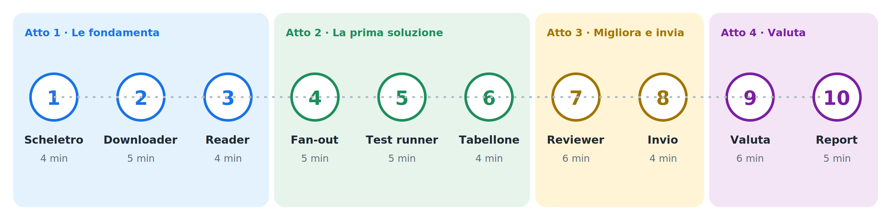
adk web che il sistema faccia la cosa nuova.Dopo il passo 1 apri un secondo terminale nella stessa cartella e lascia girare:
adk web --reload_agents
Apri http://localhost:8000, scegli oii_solver e usa una nuova sessione per ogni prova.
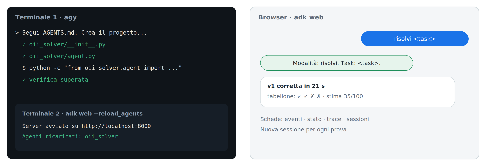
Nella vista a grafo di adk web vedi il workflow com'è davvero: il nodo attivo è evidenziato e sugli archi dei cicli compare il numero di giri. Se il grafo sembra fermo su ask_approval, sta aspettando la tua risposta.
All'inizio di ogni passo trovi il grafo com'è dopo quel passo: in blu i nodi che aggiungi, pieni quelli già costruiti, grigi e tratteggiati quelli che arriveranno.
Quando un passo funziona, salva una copia del progetto:
cp -r ../oii-solver ~/snapshot/passo-N
Se un passo successivo rompe qualcosa che non riesci a riparare, torni alla copia e riprovi.
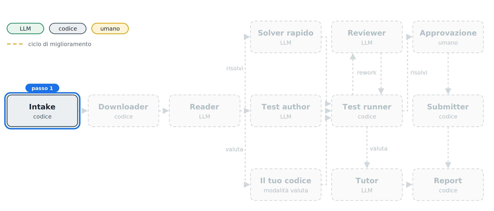
Il primo nodo del grafo non è intelligente, ed è voluto: è una funzione Python. In ADK 2.0 un nodo può essere un agente oppure semplice codice. Questo decide solo se oggi risolviamo o insegniamo.
Incolla in agy:
Segui AGENTS.md. Crea il progetto: pacchetto oii_solver per adk web, requirements.txt, .env.example con GOOGLE_API_KEY, FAST_MODEL, STRONG_MODEL, MAX_STEPS=4, MAX_FIX=3, STRESS_ITERS=60, OLINFO_DRY_RUN=1, OLINFO_USERNAME e OLINFO_PASSWORD vuoti. Non toccare il file .env: esiste già. Primo nodo: intake. Capisce la modalità dal messaggio: "risolvi <task>" oppure "valuta <task>" con il codice dello studente incollato in un blocco python o allegato come file .py. Gestisci node_input sia come testo sia come Content con parti inline. Salva modalità, task ed eventuale codice nello stato e rispondi con un riepilogo. Verifica con python -c "from oii_solver.agent import root_agent".
Avvia adk web --reload_agents nel secondo terminale, poi scrivi risolvi ⟨task⟩. Il sistema risponde con modalità e nome del task.
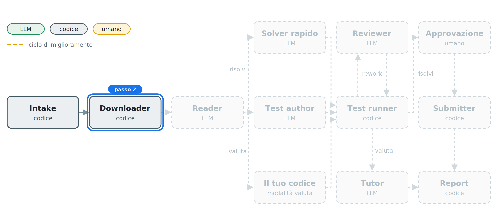
Il Downloader scarica il testo in PDF e gli allegati, e riconosce gli esempi. Il PDF passa al modello così com'è: Gemini legge formule e figure senza bisogno di estrarre il testo.
Il sito non documenta la sua API e può cambiarla: il Downloader prova prima l'API, poi la pagina pubblica del task, e come ultima risorsa il fallback locale. Controlla che il PDF sia vero prima di passarlo al Reader, e riusa i file già scaricati solo se il download precedente è riuscito davvero. Soprattutto, non inventa mai dati: se non trova il testo, si ferma e lo dice.
Incolla in agy:
Scrivi oii_solver/olinfo.py con il client dell'API descritta in AGENTS.md e il nodo download_task. Prova prima l'API JSON; se non risponde o dà errore, usa la pagina pubblica https://training.olinfo.it/task/<task>: da lì leggi titolo, limiti di tempo e memoria, tipo di input/output, punteggio massimo e i link degli allegati (https://training.olinfo.it/files/<digest>/<nome>). Per il testo cerca nell'HTML il link al PDF, o i dati JSON che la pagina incorpora.
Scarica testo.pdf (italiano, altrimenti inglese) e gli allegati in work/<task>/, estraendo gli zip, e trova gli esempi input/output negli allegati. La cache vale solo se esiste work/<task>/meta.json, scritto alla fine di un download riuscito con l'origine dei dati ("sito" o "fallback").
Controlla che testo.pdf sia un PDF vero (inizia con %PDF e ha almeno una pagina). Se il sito non risponde o il PDF non è valido, usa fallback/<task>/testo.pdf e fallback/<task>/meta.json, se esistono; meta.json ha le chiavi titolo, time_limit (secondi), memory_limit_mb e io. Mai dati finti in work/.
Se il task non esiste né sul sito né in fallback/, prova i prefissi ois_, oii_ e preoii_: se uno esiste, rispondi "Forse intendevi ...?" senza procedere.
I linguaggi ammessi si vedono solo dopo il login: considera Python ammesso se tra gli allegati c'è un template .py, altrimenti scrivi "Python: da verificare all'invio" e continua. Fermati con un messaggio chiaro solo se l'input/output non è stdin/stdout o se serve un grader C/C++ senza un grader.py. Passa al nodo dopo un Content con il PDF e i sorgenti allegati. Prova su <task>; se la tua sandbox non raggiunge il sito, non inventare dati: dimmelo e lo provo io.
In una nuova sessione scrivi risolvi ⟨task⟩: compaiono titolo, limiti di tempo e memoria, allegati, esempi trovati e l'origine dei dati (sito o fallback). Il PDF in work/⟨task⟩/ deve pesare decine di KB, non pochi byte.
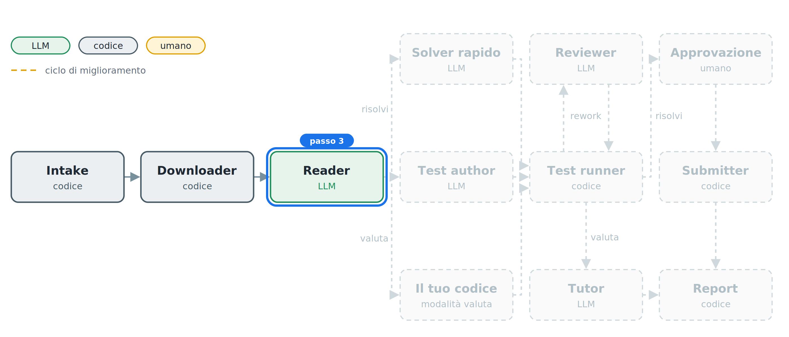
Il Reader è il primo agente LLM. Estrae, non risolve: trasforma il PDF in una specifica strutturata, validata da uno schema Pydantic. Fa quello che fa un concorrente nei primi due minuti: guarda i vincoli e capisce quale complessità serve.
Incolla in agy:
Aggiungi l'agente reader (FAST_MODEL) con output_schema TaskSpec: summary, io_format, constraints, subtasks [{punti, vincoli, n_max}], target_complexity, edge_cases, examples [{input, output}]. Deve estrarre, non risolvere; gli esempi vanno trascritti alla lettera.
Poi il nodo route_mode: salva la spec nello stato, mostra in chat una tabella dei subtask con punti e limiti, e fa route "risolvi" o "valuta" in base alla modalità. Per ora collega solo "risolvi" a un nodo provvisorio che risponde "pronto". Verifica con un import.
Compare la tabella dei subtask con punti e limiti: è la mappa dei punti del problema.
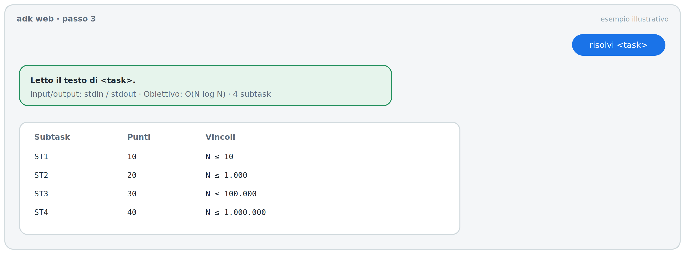
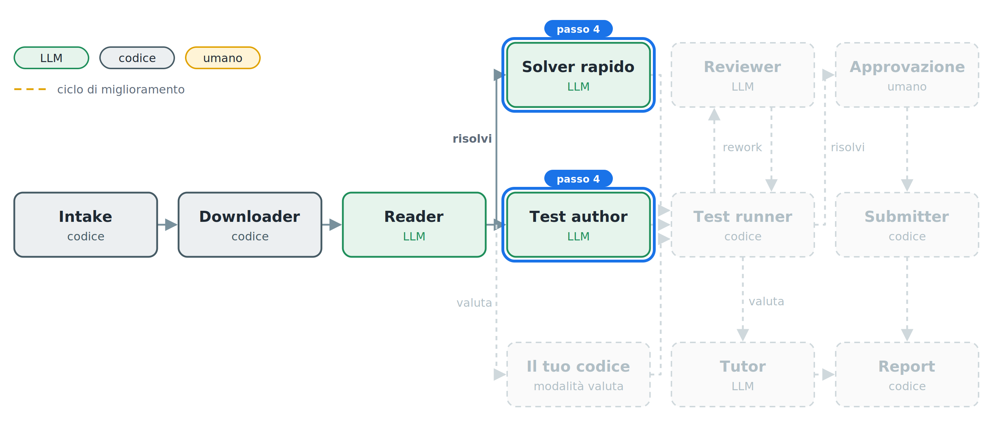
Qui il grafo si apre in due rami paralleli, uniti da un JoinNode.
L'indipendenza è il punto chiave: se due agenti sbagliano, sbagliano in modo diverso, e uno smaschera l'altro.
Incolla in agy:
Sostituisci il nodo provvisorio con un fan-out, seguito da un JoinNode:
- quick_solver (FAST_MODEL): la soluzione Python più semplice che sia sicuramente corretta, anche lenta; niente ottimizzazioni, deve rispondere in fretta. Output Candidate {title, why, complexity, code}, output_key "candidate".
- test_author (FAST_MODEL): output TestKit {brute_code, gen_code, subtask_gen_code}, output_key "testkit". La brute è Python ovviamente corretto. gen_code produce un input piccolo casuale con il seed in argv[1], spesso con casi limite. subtask_gen_code, dato l'indice k in argv[1], stampa l'input più grande e più lento del subtask k. Non vede mai la soluzione.
Dopo il join, un nodo provvisorio che mostra titolo e complessità della v1. Verifica con un import.
Arriva la v1 con titolo e complessità. Nella vista degli eventi di adk web si vede che i due rami sono partiti insieme.
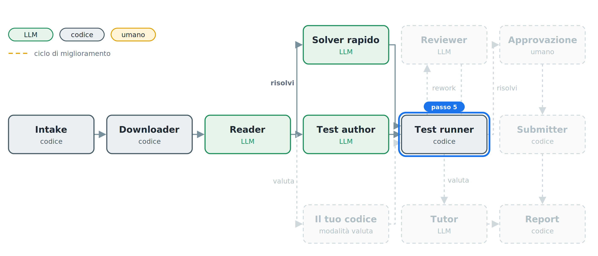
Il Test runner è il giudice, e non contiene nessun LLM. Prova la versione sugli esempi, poi su input casuali confrontati con la brute force: lo stress test che un concorrente fa a mano.
I test vengono salvati la prima volta e riusati nelle esecuzioni successive sullo stesso task. Così due esecuzioni, o il tuo codice e quello del sistema, si misurano sugli stessi identici input.
Incolla in agy:
Scrivi oii_solver/judge.py, senza LLM: esegue un programma Python in una cartella temporanea con i limiti di AGENTS.md e confronta gli output a token.
Sostituisci il nodo provvisorio con test_runner: prova il candidato sugli esempi, poi su STRESS_ITERS input casuali contro la brute force (solo se la brute passa gli esempi). test_runner usa work/<task>/testkit.json se esiste; altrimenti salva lì il TestKit appena prodotto.
Se il candidato sbaglia, tieni il controesempio più corto, registralo in history, salva il motivo in state["rework_reason"] = "fix" e fai route "rework"; per ora collega "rework" a un nodo che mostra il controesempio. Se è corretto, salva work/<task>/<modalità>/v1.py e scrivi "v1 corretta" con i secondi trascorsi dall'inizio.
Esegui lo stress test in parallelo, fino a 4 processi, con timeout pari al time limit, e scrivi in chat l'avanzamento ("stress test 20/60").
Verifica judge.py su un problema giocattolo (somma di N numeri): una soluzione giusta e una sbagliata.
Compare «v1 corretta in N secondi». Se invece compare un controesempio, hai visto il giudice al lavoro: è esattamente il bug che avresti trovato con uno stress test.
Corretta non basta: quanto vale? Per ogni subtask il Test runner genera il caso peggiore e cronometra la versione contro il limite di tempo del task. Il punteggio stimato è la somma dei punti dei subtask che entrano nel limite.
È una stima: il grader ufficiale gira su un'altra macchina.
Incolla in agy:
Estendi test_runner con il benchmark: per ogni subtask genera l'input con subtask_gen_code e misura il tempo del candidato contro il time limit del task. Un subtask passa se sta nel limite; il punteggio stimato è la somma dei punti dei subtask che passano.
Tieni in stato history e best come in AGENTS.md. Mostra in chat l'avanzamento ("benchmark ST3") e poi il tabellone: versione, titolo, complessità, tempo per subtask con ✓ o ✗, punteggio stimato. Se il Reader non ha estratto subtask, scrivi "stima non disponibile" invece di 0. Verifica con un import.
Compare il tabellone della v1: di solito corretta ma lenta, con punti solo sui subtask piccoli.
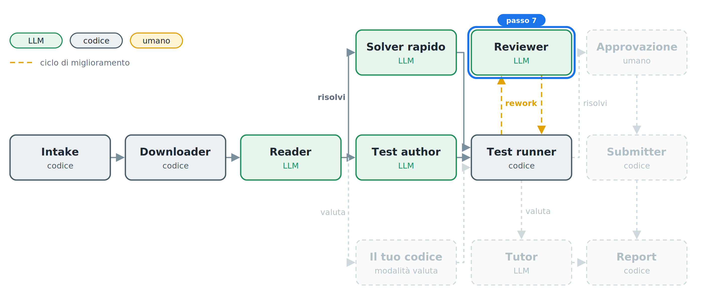
È il cuore del sistema. Il Reviewer non si limita a giudicare: implementa. A ogni giro sceglie un solo miglioramento, quello più utile per il prossimo subtask che non passa, e lo motiva con le misure del tabellone.
Ogni nuova versione torna al Test runner. Se è sbagliata, il controesempio torna al Reviewer, che corregge solo il bug. Due limiti impediscono al ciclo di girare all'infinito: MAX_STEPS miglioramenti e MAX_FIX correzioni fallite di fila.
Incolla in agy:
Aggiungi l'agente reviewer (STRONG_MODEL, output_key "candidate") con output Step {review, title, why, complexity, code}. L'istruzione è una funzione che include spec, codice attuale, tabellone e, se c'è, il controesempio.
Regole per il reviewer: un solo miglioramento per passo, il più utile per il prossimo subtask che non passa; nel why il collo di bottiglia misurato; niente riscritture da zero se non servono. Con un controesempio corregge solo il bug.
Archi: test_runner --rework--> reviewer --> test_runner. test_runner fa rework con motivo "improve" finché il punteggio stimato non è pieno e i passi sono meno di MAX_STEPS. Dopo MAX_FIX correzioni fallite di fila riparte dalla versione best. Alla fine fa route "done_solve" verso un nodo che mostra il tabellone finale. Se non esiste nessuna versione corretta, fa route "give_up" con l'ultimo problema.
Salva ogni versione corretta in work/<task>/<modalità>/v<N>.py e, alla fine, il tabellone in work/<task>/<modalità>/tabellone.json. Verifica con un import.
In una nuova sessione scrivi risolvi ⟨task⟩ e osserva il tabellone crescere: ogni riga dice cosa è cambiato, perché, e quanti punti vale adesso.
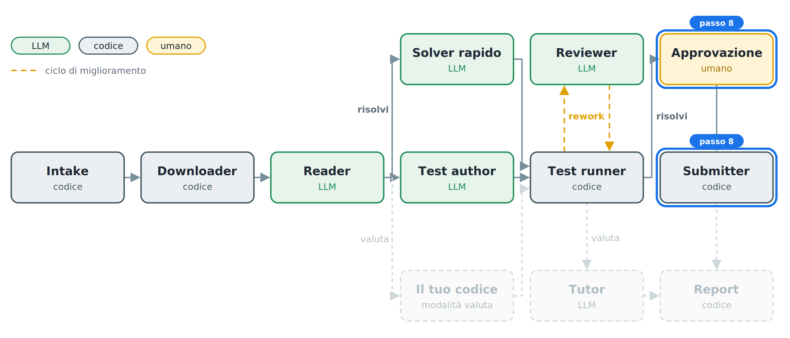
Un agente che agisce nel mondo reale deve chiedere il permesso. RequestInput mette in pausa il grafo finché un umano non risponde: senza «invia» non parte nessuna sottoposizione.
Incolla in agy:
Sostituisci il nodo finale di "done_solve" con il cancello umano: ask_approval fa RequestInput con il tabellone e chiede di scrivere «invia»; se la risposta lo contiene vai a submit, altrimenti a stop. submit: con OLINFO_DRY_RUN=1 simula soltanto. Altrimenti fa login con le credenziali in .env e legge i linguaggi ammessi, visibili solo dopo il login: se Python non c'è, si ferma e lo dice; se c'è, invia la versione best, in PyPy se ammesso, altrimenti Python 3. Attende l'esito e mostra, per ogni subtask, il punteggio ufficiale accanto a quello stimato. Verifica con un import.
In una nuova sessione scrivi risolvi ⟨task⟩. Alla fine del ciclo il sistema si ferma e chiede conferma: scrivi invia.
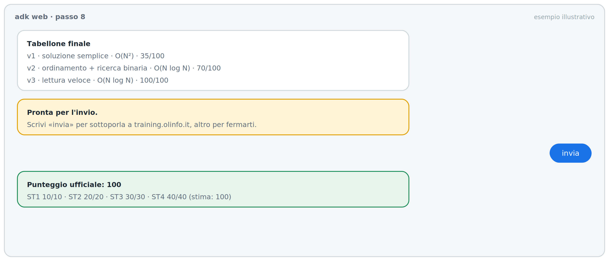
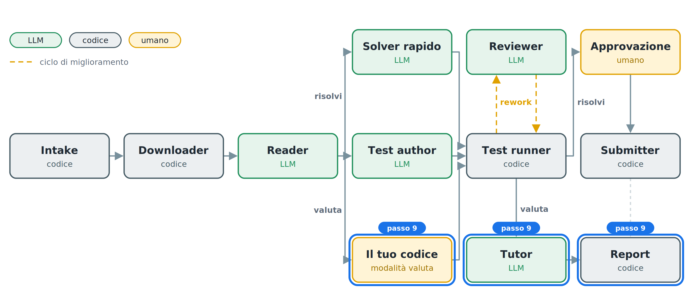
Stessa rete, ruolo diverso: invece di risolvere, insegna. In modalità valuta la v1 è il codice dello studente. Il sistema lo verifica, lo migliora a passi con lo stesso ciclo del passo 7 e alla fine il Tutor trasforma la storia delle versioni in una guida.
Ogni passo della guida corrisponde a una versione che ha superato i test: la guida non può consigliarti qualcosa che non funziona. Se hai già eseguito risolvi sullo stesso task, la review confronta il tuo codice con la versione migliore del sistema, sugli stessi input.
Incolla in agy:
Collega la route "valuta" di route_mode a test_author_v, una copia di test_author con un altro nome, e da lì a test_runner: in questa modalità la v1 è il codice dello studente, già nello stato. In modalità valuta, test_runner chiude con route "done_teach" invece di "done_solve".
Aggiungi l'agente tutor (STRONG_MODEL) su "done_teach" con output_schema Guide: review (corretto o no, complessità, cosa lo rallenta), steps [{v, obiettivo, perche, suggerimento, come_verificare}] uno per ogni versione della storia, chiusura. Ogni step deve riferirsi a una versione che ha superato i test. Se esiste work/<task>/risolvi/tabellone.json, la review include un confronto subtask per subtask tra il codice dello studente e la versione migliore del sistema, sugli stessi input; il codice del sistema compare solo in fondo.
Dopo il tutor, un nodo render_report senza LLM che per ora scrive work/<task>/valuta/guida.md dalla Guide e la mostra in chat. Verifica con un import.
In una nuova sessione scrivi valuta ⟨task⟩ e allega il tuo file .py, oppure incolla il codice in un blocco python. Alla fine compare la guida.
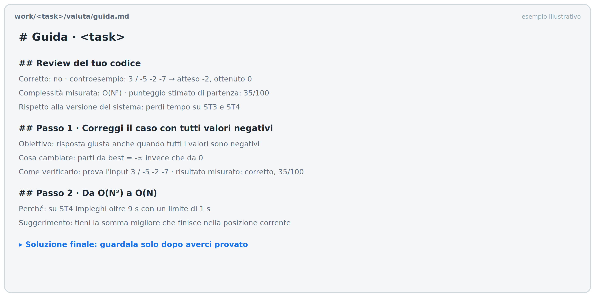
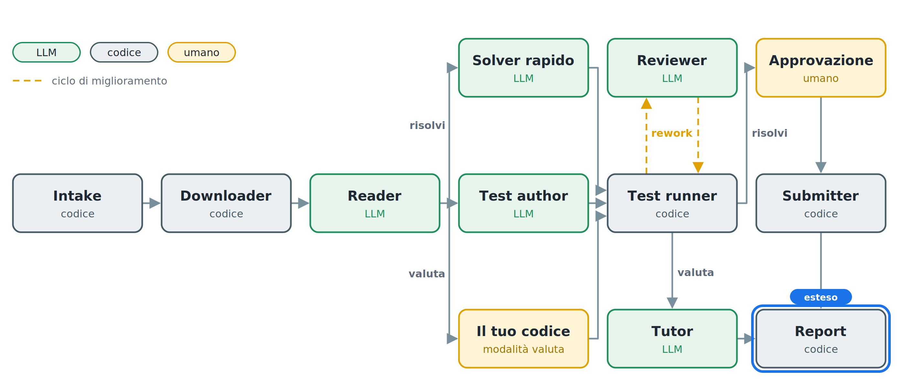
La guida in testo dice cosa cambiare; la vista visiva lo mostra. Il nodo render_report, senza LLM, costruisce una pagina HTML con:
difflib.HtmlDiff della libreria standard;Il diff non lo scrive il modello: è la differenza reale tra due versioni che hanno superato i test.
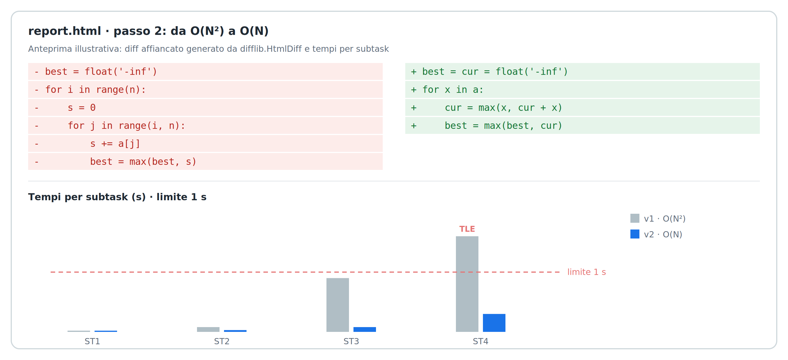
Incolla in agy:
Estendi render_report, sempre senza LLM. Oltre a guida.md scrive in work/<task>/<modalità>/ report.html, una pagina unica senza dipendenze esterne, con: 1) intestazione con task, punteggio stimato iniziale e finale; 2) grafico SVG dei tempi per subtask di ogni versione, con la linea del time limit e ✓/✗; 3) per ogni passo: spiegazione del tutor, diff affiancato tra versione precedente e nuova fatto con difflib.HtmlDiff (solo righe cambiate, 3 di contesto), risultato misurato; 4) per le correzioni, il controesempio: input, output atteso, output ottenuto; 5) la soluzione finale chiusa in un <details> "guardala dopo averci provato". Collega anche submit e stop a render_report: in modalità risolvi usa il why del reviewer al posto della spiegazione del tutor. In chat mostra il percorso di report.html. Verifica generando il report dalla storia di un'esecuzione precedente.
Apri nel browser il file report.html indicato in chat. Scorri i passi: per ognuno vedi cosa è cambiato nel codice e come sono cambiati i tempi.
Prima di considerare finito il lavoro, verifica tutto il sistema in pochi secondi, senza rete e senza chiamate al modello. Gli agenti vengono sostituiti da modelli finti con risposte scritte in anticipo, e il download da dati costruiti in una cartella temporanea. I dati finti vivono solo qui, nei test.
Incolla in agy:
Scrivi tests/smoke_test.py, che esegue tutto il grafo senza rete e senza chiamate al modello:
- una classe Scripted(BaseLlm) (google.adk.models.base_llm) il cui generate_content_async fa yield di LlmResponse(content=types.Content(role="model", parts=[types.Part(text=json_scriptato)]));
- il Workflow copia gli agenti: sostituisci node.model sui nodi di root_agent.graph.nodes, cercandoli per nome;
- Runner(app_name="oii", node=root_agent, session_service=InMemorySessionService()) da google.adk, con download_task sostituito da dati costruiti in una cartella temporanea;
- la ripresa dopo RequestInput con create_request_input_response(interrupt_id, {"result": "invia"}) da google.adk.workflow.utils._workflow_hitl_utils.
Problema giocattolo: somma di N numeri. La v1 ha un bug che lo stress test deve trovare, il reviewer lo corregge, poi approvazione e invio simulato. Un secondo giro in modalità valuta deve produrre guida.md e report.html. Nessun file in work/.
python tests/smoke_test.py termina senza errori in pochi secondi. Rilancialo dopo ogni modifica al progetto.
Incolla in agy:
Il nodo <nome> dà questo errore: <incolla>. Correggi solo quel nodo, senza toccare il resto.
Chiudi agy, ripristina la copia dell'ultimo passo riuscito e riparti:
cd .. && rm -rf oii-solver && cp -r ~/snapshot/passo-N oii-solver && cd oii-solver
Riapri agy e scrivi: «Ho ripristinato il progetto al passo N: rileggi i file e continuiamo dal passo N+1.»
Se il lavoro si interrompe a metà, assicurati che CONTINUA.md sia nella cartella del progetto (è nello starter kit) e scrivi ad agy «Segui CONTINUA.md». Il file fa controllare ad agy lo stato reale del codice, tiene traccia dei passi in PROGRESS.md e riparte dal primo non completato. Se si interrompe di nuovo, basta ripetere la stessa frase.
STRONG_MODEL, oppure aumenta MAX_STEPS.gen_code.ois_rockpaperscissors.work/⟨task⟩/ e riscarica.work/⟨task⟩/meta.json.tests/, oppure OLINFO_DRY_RUN tocca anche il download. Correggi con il prompt jolly citando le regole di AGENTS.md.adk web. Se il nodo attivo è ask_approval, il sistema aspetta la tua risposta.Hai costruito una rete di agenti che risolve problemi reali delle Olimpiadi e insegna a migliorare il codice, senza scrivere a mano una riga del sistema.
valuta sulle tue soluzioni di gara: il confronto con la versione del sistema, sugli stessi input, ti dice dove perdi tempo.